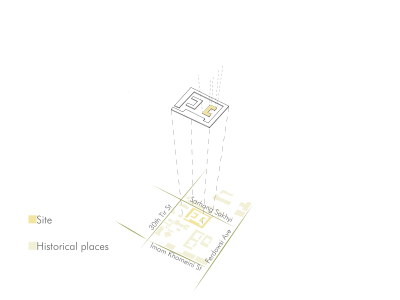
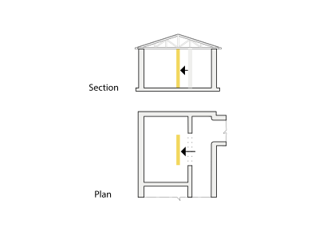
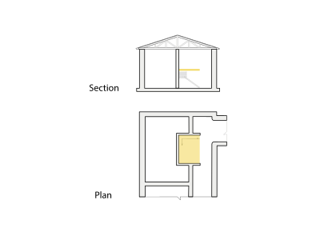
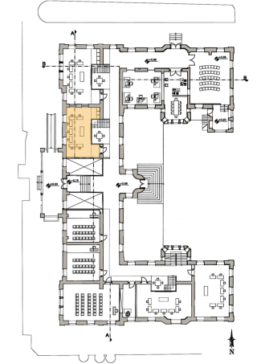
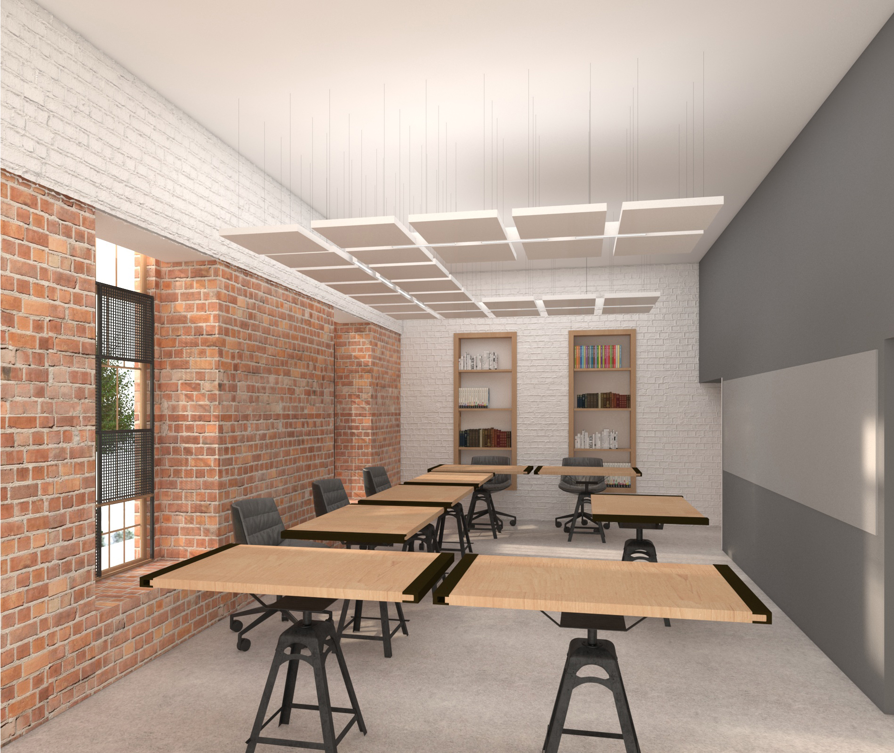

Context



Adaptive Reuse Approaches
A second level was introduced to utilize the high ceilings
Additional spaces were introduced along the long corridors


Spaces and Adaptations




Adaptive Reuse: Educational Hub
This project focused on repurposing a historical building for educational use, addressing challenges such as adapting high ceilings and long brick corridors.
Project Type: Interior Architectural Design 3, University of Art
Location: A building in the historical site of Meidan Masgh, Tehran, Iran
Date: January 2020